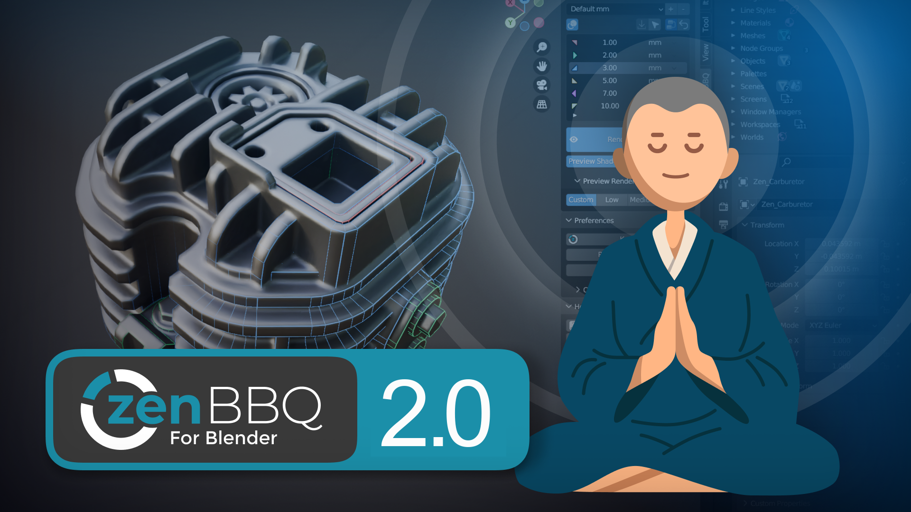

Zen BBQ 2.0 for Blender
Zen BBQ (Build Bevels Quickly) is a professional toolset for Blender designed to create, adjust, visualize, and bake bevels in a fully non-destructive manner. By leveraging the power of the Cycles Bevel Shader, the addon allows you to achieve realistic rounded edges without complex topology preparation, and then seamlessly bake them into production-ready texture maps.

Core Concepts & Advantages
Traditional workflows require significant time to maintain clean high-poly topology for Subdiv or Bevel modifiers. Zen BBQ redefines this approach through two main pillars:
- Non-Destructive Beveling: Bevels are generated at the shader level. Your base geometry remains simple, lightweight, and easy to edit.
- Integrated Baking Pipeline: Procedural bevels are not locked inside Blender. With the built-in baking tools, these shader-based effects can be instantly baked directly into standard Tangent-space Normal, Curvature, or AO maps, making the asset ready for game engines or external texturing suites.
- Speed and Iteration: Adjusting bevel radii happens instantly for the entire object or specific selected elements.
- Visual Precision: Support for real-world measurement units (mm, cm, m, in, ft) ensures the accuracy required for industrial design and architectural visualization.
Application Areas
- Concept Art & Design: Effortlessly create complex shapes by intersecting meshes (Boolean-based workflow) and getting smooth transitions. (Special thanks to Tor Frick for popularizing this technique).
- Game Development (High-poly to Low-poly workflow): Use Zen BBQ to prepare High-poly models. Procedural bevels bake perfectly into texture maps, saving hours of modeling time on support loops and mesh sewing.
- Visualization: Add realistic highlights to sharp edges, which is critical for the human eye to perceive object forms correctly.
Key System Features
1. Bevel Management
A centralized preset system provides flexible radius control.
- Preset Groups: Organize sets of bevel values with different measurement units.
- Color-Coded Overlay: Each preset corresponds to a unique viewport color for instant visual diagnostics.
- Edge & Vertex Attributes: Bevel data is stored directly in mesh attributes, allowing for non-uniform, per-element width control.
👉 Learn more about Bevels Subpanel
2. Viewport Display Engine
A powerful visualization toolset for cycling through different preview modes:
- Material Mode: Displays your original, unaltered user materials.
- Shader Mode: Real-time visualization of procedural bevels and diagnostic maps (Normal, AO, Curvature, Mask, etc.) using Cycles.
- Image Mode: Preview baked texture maps directly on the model to verify quality before export.
👉 Deep dive into Viewport Display
3. Advanced Baking Pipeline
A streamlined environment for generating Normal, AO, Curvature, and ID maps.
- Object Monitor: Intelligent pre-bake checklist and error logging (detects missing UVs, flipped islands, and overlaps).
- Naming Templates: Automation of file naming using dynamic tokens like
%OBJECT%and%SUFFIX%. - Sampling Presets: Quick toggles between Low, Medium, and High quality profiles for baking.
👉 Bake Panel Guide | Manual Baking Tutorial
4. Workflow Utilities (Tools)
- Live Boolean Integration: Automatically assigns a default bevel radius to new intersection edges created by non-destructive Boolean modifiers. Read more.
- Normal Map Tools: Includes the Explode System for artifact-free baking, Weighted Normal injection, and the Normal Mixer for blending procedural bevels with micro-textures.
- Vertex Color Mask: Encodes bevel parameters into Vertex Color attributes for export to external suites like Marmoset Toolbag.
👉 Tools Overview | Marmoset Toolbag Integration
5. Zen Multi-Panel UI
Featuring a modular interface where you can customize your workspace by pinning subpanels and rearranging their order.
👉 Main Panel Overview | Pie Menu Guide (Ctrl+Shift+X)
Quick Navigation
- Installation — How to install and activate the addon.
- Quick Start — Essential steps: assigning, previewing, and baking.
- Preferences — Customizing hotkeys, UI styles, and default behaviors.
- Troubleshooting — Common questions and solutions.
Zen BBQ — Build Bevels Quickly!